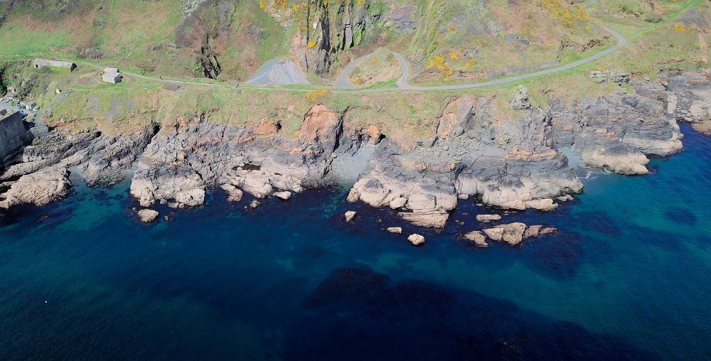

<div class="bg-white marketing m-0 w-100">

  <div class="container px-0 py-5">

    <div class="d-flex justify-content-evenly flex-wrap">

      <div class="blog-card d-flex flex-column shadow rounded d-inline-block pt-3 pb-0 px-0 m-0" (click)="redirect('the-journey-so-far')">

        <div class="blog-card-picture-container d-inline-flex justify-content-center w-100 m-0 p-0">
            
        </div>

        <div class="flex-grow-1  p-3">
          <h3 class="fw-normal p-0 pb-1 text-center">
            The journey so far ...
          </h3>

          In our first news update, Emma gives the background to how Snorkelology came about and what we hope to achieve.  Dig in
          and as always we welcome your feedback!

        </div>
        <div class="p-3 d-inline-flex justify-content-end">
          <small class="muted"><i>26th Nov 2022</i></small>
        </div>


      </div> <!-- /blog-card-->

  </div>

</div>
